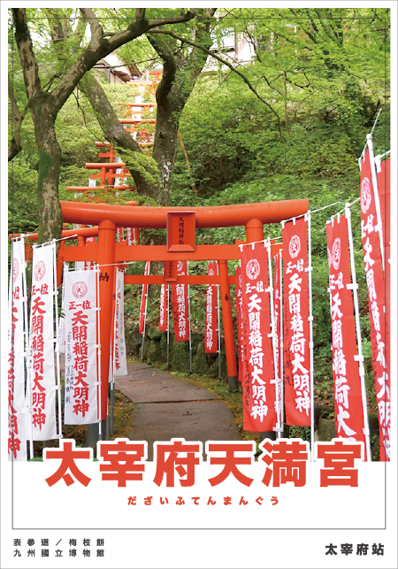

✕ 關閉選單 Close Menu
𖤐 首頁 HOME
𖤐 日本-九州
𖤐 日本-本州
☰
2

太宰府天滿宮/だざいふてんまんぐう
太宰府天滿宮的主祭神是菅原道真，又名「天神」，即學問、文化及藝術之神。
到訪神社
日本的神社通常有數個出入口，但總是只有一條參道，由一座或多座鳥居作為標記。所有神道神社都有鳥居，表示通往聖地的入口。
太宰府天滿宮的參道始於太宰府站東側，一路延伸至整條人行道。參道兩旁有多間商店和餐館，其中不少都有販賣梅枝餅。這道傳統的甜點，與太宰府天滿宮有著十分密切的關係。
神社前有一條數百公尺的步道，途經幾座鳥居，以及神社的重要象徵「御神牛」青銅雕像，過了三條橋後，便能抵達御本殿兩層式的入口——樓門。
淨化儀式
樓門前的右側是手水舍（淨手亭），所有神社都有，不過太宰府天滿宮內手水舍（淨手亭）的水盤特別大，其利用附近山坡採來的一塊完整石頭建成。
手水舍（淨手亭）有特製的長柄勺，讓您清洗雙手和漱口。到訪神社的遊客務必遵循這道儀式，在踏入神聖的御本殿前淨化身心，屬於神社體驗的一部分，而且水盤設有圖示指引，讓您按步驟跟著做，不必擔心犯錯。